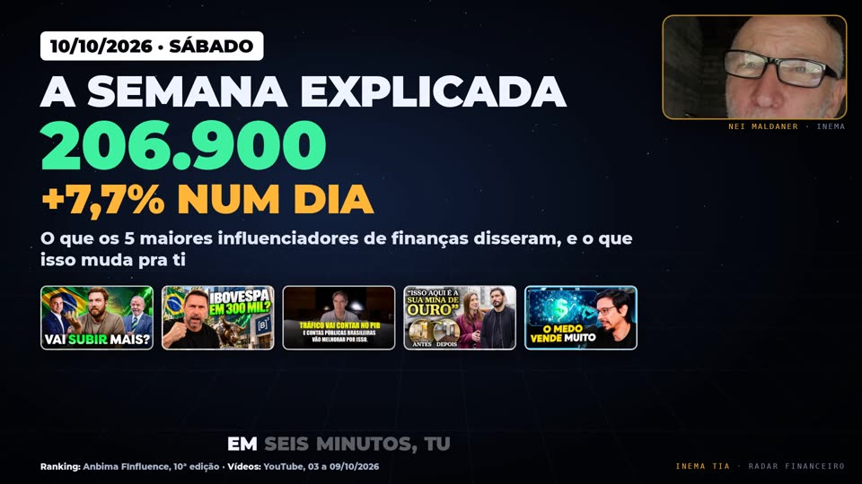
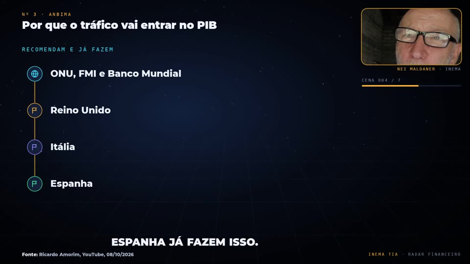

finviral is a system that, on its own, makes short (9:16) videos about what Brazil's biggest finance influencers said in their videos. It "watches" the YouTube videos through transcripts, separates the numbers, the facts and the controversies, and builds a video with big animated numbers, the source of each data point on screen and Nei commenting (avatar). It is for anyone who wants to follow the market in one minute, with no investment advice. It runs on a computer with a GPU, using a Claude Code and HeyGen subscription. On Saturdays and Sundays it also makes the long 16:9 video "The week explained" (5 to 7 minutes), with one chapter per influencer. Everything is published automatically on the INEMA TIA YouTube channel and sent to Telegram.
What it is
A financial radar that builds itself
Every night finviral reads what the channels published, checks each number against the transcript and delivers a finished video for Nei to approve. Not investment advice: the video reports what each person said, always with the source.
🔎 Only numbers with a source
Every number must be in the transcript, with the literal excerpt. Channel, date and title appear on screen in every scene. The video states that it is not investment advice.
🎬 Finished video, no editor
Counters, chart, controversy stamp, word-by-word captions and Nei's avatar in the corner, rendered frame by frame.
🔒 Everything via subscription
Script with claude -p (subscription, no API), local transcription with Whisper and avatar through the HeyGen studio. HeyGen's plan-upgrade offer is always declined.
How it works
From transcript to Telegram, no human hands in between
Six steps chained by auto/rodar.sh. If the check fails twice, the video is not made.
Lists the videos from the channels in canais.json (metadata only, yt-dlp), downloads the audio and transcribes locally (inemavox, Whisper large-v3).
2
Script
claude -p reads the transcripts and writes base.md (each number, who said it, the video and the literal excerpt), roteiro.json (lines and visuals) and legenda.txt (text for approval).
3
Check
auto/checar.py checks that each excerpt is in the transcript, that the numbers in the speech are spelled out, that the images exist, and that there is a CTA and the "not investment advice" notice. Failed: it goes back once for correction.
4
Avatar
HeyGen generates Nei's avatar through the studio (subscription, no generation API). motor/retempo.py aligns the artwork to the speech. If HeyGen fails, the version with Nei's photo and voice (Chatterbox) comes out.
5
Video
motor/palco.html is rendered frame by frame by Playwright, with the source in every scene. The avatar sits in the corner, with a soundtrack.
6
Publishing
auto/publicar.sh publishes on YouTube INEMA TIA (lives2) through yt-pubx and always sends it to bot v3, with the link. If the avatar failed, the photo version only goes to the bot.
Schedule
Three rounds a week, at 02:00
User systemd timers. A slow day does not become a video: the bot receives "no topic".
Mon to Fri
diario round · 40–60 sWhat they published yesterday and the day before: one main story and at most one or two more numbers.
Saturday
semanal round · 90 s to 2 minWeekly recap: the biggest number, the controversy and one number from each relevant influencer. Then the long 16:9 "The week explained".
Sunday
domingo round · ~90 sWhat they expect for the coming week: bets, dates and risks they pointed out, always attributed. Then the long 16:9 explained.
Saturday and Sunday
The long video: the week explained
The short gives the scoreboard; the long 16:9 explains it. 5 to 7 minutes, one chapter per influencer: what they said (literal quote), what it means, the context and the numbers with sources. The short says at the end that the full explanation is on INEMA TIA.


🎞️ Explicavideo scenes
Comparison, timeline, struck-and-corrected statement, lists and counters from explicavideo v2, plus finance pieces: profile card, giant number, literal quote, chart and stamp.
🧾 Same fact gate
auto/checar.py --longo: every fact with a literal quote, spoken numbers written out and every animation tied to a spoken word.
🧑💼 Avatar in blocks
The HeyGen studio accepts up to 4,500 characters per video: the script goes in blocks and is joined into a single avatar.
# run the long video for an edition already approved by checar --longoauto/longo.sh edicoes/2026-10-10-semanal-longo "semanal · LONGO · 10/10/2026"
Prerequisites
What must be on the machine
A computer with a GPU, Claude Code logged in to the subscription and the explicavideos HeyGen profile.
Collection and voice
yt-dlp to list and download, inemavox (~/projetos/inemavox) to transcribe and cardshorts for the Chatterbox nei voice.
Render
Node with Playwright (motor/node_modules is a link to the one in eventosextremospub) and ffmpeg.
Script, avatar and delivery
claude (Claude Code logged in to the subscription), Xvfb :99 with the explicavideos HeyGen profile and bot v3 (refazvideo/ferramentas/enviar_bot_v3.mjs).
User guide · step by step
Turn on, test and run by hand
Real commands from the repository, run from the project root.
1
Choose the influencers
The list lives in canais.json. Today it is the top 10 of the Anbima FInfluence ranking (10th edition): Bruno Perini, Economista Sincero, Ricardo Amorim, O Primo Rico, Hermann Greb, Café com Ferri, Pablo Spyer, Primo Pobre, Nathalia Arcuri (Me Poupe!) and Tiago Reis. To pause someone without deleting, use "ativo": false.
If another established, trustworthy name shows up in the spotlight, the system suggests adding it in the bot message. An emerging name never gets in, and adding only happens with Nei's okay.
2
Turn on the schedule
Copy the user systemd units and enable the three timers.
The video arrives in bot v3 with the text for approval. Nei approves and publishes; nothing goes live on its own.
Rules for every video
What every video follows
The check gate and the script follow these rules.
📅 Full frame 0
Date dd/mm/yyyy and the strongest number right in the first frame.
📌 Source on screen
Only numbers that are in the transcript make it in, with channel, date and title on screen. Not investment advice.
⚖️ No taking sides
Elections and politics: the video reports what each person said, always attributed.
🗣️ Nei's tone
Spoken in Nei's tone (informal "you", Portuguese "tu"), with numbers and years spelled out.
📣 Ends with a CTA
Comment hook and a CTA for AI agent management at inema.club.
🎭 HeyGen via subscription
Only through the subscription studio. The plan-upgrade offer is always declined.
Example
Edition of 09/10/2026: the week
Two frames from the video of the edicoes/2026-10-09-semana edition, with Nei's avatar in the corner.
Frame 0: date, the strongest number and the video thumbnails, with the source (Anbima ranking and YouTube videos) in the footer (video in Portuguese).End: AI agent management CTA at inema.club, with Nei commenting.